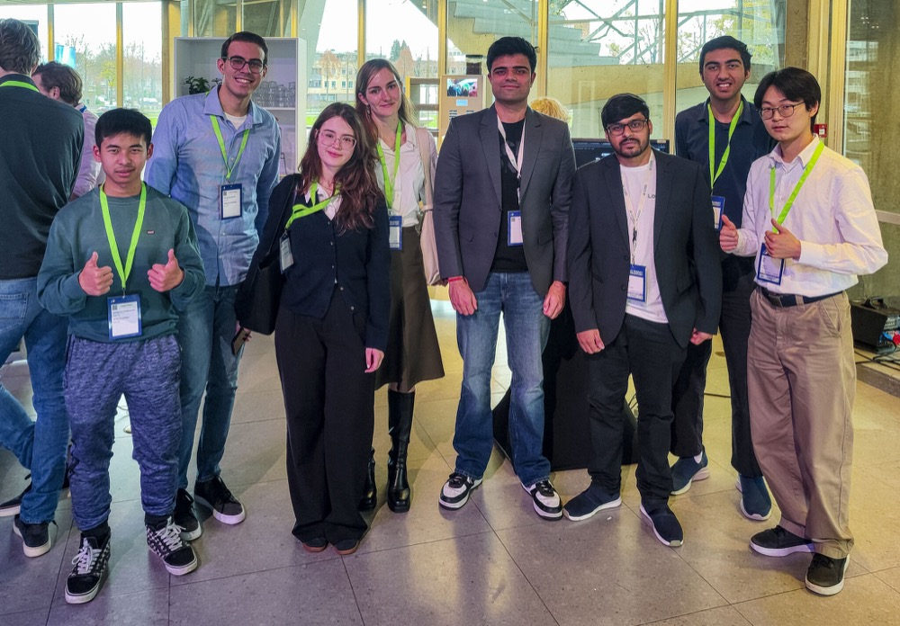
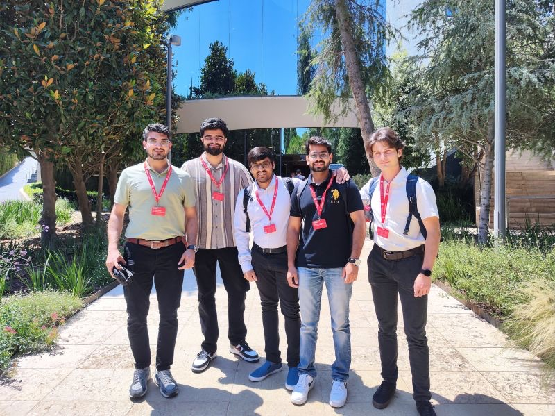

Scaling Distributed AI Workloads on the Spike-A Supercomputer (AI-SIB)
How the AI Supercomputing Initiative Brabant (AI-SIB) and TU/e's Spike-A supercomputer enable scalable multi-GPU model training and code optimization.
Read Technical Summary
Machine Learning Engineer & Data Scientist
Scaling distributed AI and high-performance deep learning on the Spike-A supercomputer within the AI Supercomputing Initiative Brabant (AI-SIB) at TU Eindhoven. Previously engineered telemetry pipelines at Vencomatic Group, and automated computer vision solutions as Co-Founder & CTO of Loopit.ai.
Turning complex supercomputing research and multi-modal AI into high-performance production systems
I am a Machine Learning Engineer and Data Scientist with an MSc in Computer Science & Engineering from Eindhoven University of Technology (TU/e). My focus is at the intersection of production-ready AI systems, reinforcement learning, deep learning (YOLOv8, CodeT5), and high-performance computing.
Currently within the AI Supercomputing Initiative Brabant (AI-SIB) at TU Eindhoven, I engineer solutions on the Spike-A supercomputer, scaling high-performance AI infrastructure, distributed deep learning models, and compute optimization for organizations and researchers across the Brabant innovation ecosystem. Previously at Vencomatic Group (Nov 2025 – Jun 2026), I engineered automated data pipelines and interactive Streamlit dashboards analyzing telemetry.
As Co-Founder & CTO of Loopit.ai, I directed a 12-engineer team developing an automated vehicle damage detection platform powered by custom YOLOv8 models, earning the prestigious €1,000 EAISI AI Incentive Award.
Eindhoven University of Technology (TU/e)
2023 – 2025 • GPA 7.12/10 • NetherlandsJamia Millia Islamia University
2019 – 2023 • Grade 8.54/10 • New Delhi, IndiaExperience real-time Spiking Neural Network (SNN) dynamics, event-driven synaptic firing, and high-performance compute efficiency benchmarks modeled after our research at TU/e.
Research and commercial machine learning systems driving measurable impact

AI-driven platform automating vehicular damage detection, localization, and repair estimation for insurance companies. Won the €1,000 EAISI AI Incentive Award.

High-performance AI model acceleration, distributed training pipelines, and multi-GPU cluster scaling on TU/e's Spike-A supercomputer as part of the regional AI-SIB initiative.

Reinforcement learning framework reducing false negatives by 50% in high-throughput automated sorting lines at Vencomatic Group.

Optimized prompt gisting and attention masking for code generation models at William & Mary University.

Real-time YOLOv4-tiny collision warning system detecting nearby vehicles and pedestrians with audio warnings.

Automated document parsing pipeline extracting handwritten form fields using custom CNNs and Tesseract OCR.
Career milestones, research achievements, and media highlights
AI-SIB (AI Supercomputing Initiative Brabant) // TU/e
Accelerating and scaling high-performance AI workloads on TU/e's Spike-A supercomputer as part of the regional AI-SIB initiative (TU/e, Tilburg University, Province of North Brabant, BOM). Supporting research and industry teams in deploying distributed deep learning models, code optimization, and transitions to European supercomputing infrastructure.
Vencomatic Group
Built automated data pipelines and interactive dashboards using Python, SQL Server, and Streamlit to analyze poultry production telemetry, track KPIs, and detect sensor anomalies on Azure.
Eindhoven University of Technology (TU/e)
 Enlarge
Enlarge Graduated from TU/e with Master's thesis on reinforcement learning for adaptive egg-sorting in collaboration with Vencomatic Group.
Vencomatic Group
Developed RL-based calibration system reducing false negatives by over 50% (~€25,000 annual savings, ~15,000 eggs saved, ~1,440kg CO₂e avoided). Integrated with knowledge graphs.
Loopit.ai Showcase

EnlargeShowcased Loopit.ai's platform at the Evoluon to key stakeholders across insurance and automotive industries.
William & Mary University
Optimized LLM prompts for code generation using CodeT5 by adapting gisting and prompt masking. Benchmarked on CodexGlue with CrystalBLEU and Pass@k.
EuroTeQ & IESE Business School

EnlargeRepresented TU/e in EuroTeQ cohort, accelerating Loopit.ai through mentorship, business development, and VC presentations.
Eindhoven AI Systems Institute
 Enlarge
Enlarge Won the €1,000 EAISI AI Incentive Award for Loopit.ai's promising automated vehicular damage detection platform.
Loopit.ai
Led end-to-end development of AI-driven platform automating vehicle damage detection and repair estimation. Managed 12-member team. Won €1,000 EAISI AI Incentive Award.
Philips
 Enlarge
Enlarge Participated in Philips innovation initiative, collaborating on cutting-edge technology challenges in the Eindhoven ecosystem.
Regional Dutch Press
 Enlarge
Enlarge Cashless festival bar system developed for student community featured in the regional newspaper.
Bergische Universität Wuppertal
Developed and fine-tuned deep learning models utilizing reinforcement learning and job-shop scheduling to optimize aerospace production in the AlphaMES project.
Ingersoll Rand
Developed Python-based dashboard with real-time telemetry data integration and modular pipelines for machine usage monitoring and automated reporting on cloud platforms.
Contributions, active research codebases, and open-source machine learning tooling
Automated vehicle damage localization, segmentation & repair estimation with YOLOv8.
Distributed deep learning workloads and PyTorch multi-GPU scaling on TU/e's Spike-A cluster.
Reinforcement learning for adaptive calibration of industrial sorting machinery.
Compressing LLM code generation prompts by 20-40% via prompt gisting & masking.
Deep dives into supercomputing algorithms, Spiking Neural Networks, and industrial machine learning
How the AI Supercomputing Initiative Brabant (AI-SIB) and TU/e's Spike-A supercomputer enable scalable multi-GPU model training and code optimization.
Reducing false negative sorting errors by 50% through policy optimization and telemetry analysis at Vencomatic Group.
Endorsements from professors and industry collaborators

"Siddharth is amazing. He's smart, humble and he gets things done."
Assistant Professor, TU/e

"Siddharth combines technical excellence with practical business acumen."
CTO, Loopit.ai

"A talented researcher with strong analytical and problem-solving skills."
Associate Professor, TU/e

"Siddharth's dedication to quality and innovation is exceptional."
Full Professor, TU/e
Interested in collaborating, discussing high-performance ML systems, or exploring full-time opportunities? Send a message below.